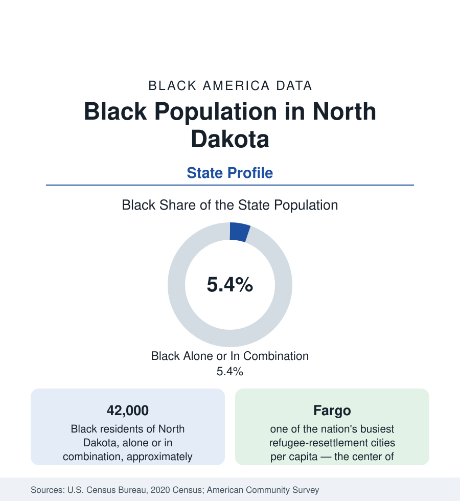

Black Census
Black Population in North Dakota: Fargo's New Americans and the Oil Patch
About 42,000 Black North Dakota residents — one in nineteen — in the fastest-transforming small population in the northern plains. The census profile.

North Dakota holds about 42,000 Black residents — Black alone or in combination — roughly one in nineteen of its people, with Black alone at about 26,000, or 3.3 percent. No small state's Black population has changed more in a generation: the 1990 census counted Black North Dakotans in the low thousands, and the population has multiplied through refugee resettlement centered on Fargo, the Bakken oil boom, and the Air Force's two northern-tier bases. This article profiles the population in the census data.
The Thin Historic Layer
Black North Dakota's early record is the plains pattern at its thinnest: Black soldiers at Fort Abraham Lincoln and Fort Totten, porters and barbers in the railroad towns (Fargo, Grand Forks, Bismarck, Minot), a small Fargo congregation tradition, and individual homesteaders in the settlement era — a population the censuses counted in the hundreds through the territory's first decades and in the low thousands across the twentieth century. The community's historic institutions — Fargo's and Grand Forks' Black churches, the state's small NAACP tradition — carried a presence far steadier than its size, and the population's stability (rather than disappearance, as in many plains counties) owed to the railroad division points and the state university towns.
Fargo: The Resettlement Transformation
The modern population is substantially a Fargo population, and Fargo's is substantially a New American one. Lutheran Social Services' resettlement program made the Fargo-Moorhead metro one of the nation's highest per-capita receiving sites from the 1990s: Somali, Sudanese, Liberian, Congolese, Ethiopian, and Eritrean communities, alongside Bosnian and Bhutanese cohorts in other categories, settled in the metro's apartment corridors and then its suburbs, until the Black population of the city of Fargo reached roughly a twelfth of its residents — the most dramatic small-city transformation in the northern plains, surpassing in speed even Lewiston's. The institutions followed the resettlement pattern at fast-forward: African markets and mosques, the metro's school districts reporting Black enrollments approaching a tenth, North Dakota State University's growing African student presence, and a second generation now entering the workforce the boom built.
Oil and Air Power
The second and third layers are extractive and military. The Bakken shale boom drew Black workers to the Williston Basin in the 2000s and 2010s — the oil counties' Black counts multiplied from near zero in the boom censuses, in the Wyoming energy pattern at greater amplitude — and the bust cycles thinned them in turn. The Air Force anchors the permanent layer: Grand Forks AFB and Minot AFB sustain Black service communities in their cities (Grand Forks and Minot record sustained shares in the mid-single digits), and the missile fields' support towns add a dispersed increment. Bismarck, the capital, holds a small government-shaped community; the reservation counties and the farm belt record the plains minimum.
Indicators and Change
The survey data for a young, newcomer-heavy population of 42,000 describe motion more than position: incomes rising with tenure in the resettlement cohorts, the oil and base layers at federal and industry scales, educational pipelines (NDSU, UND, the tribal colleges' small Black enrollments) in formation. The estimates show the population among the nation's fastest-growing in percentage terms across the century's censuses — from roughly 0.6 percent of the state in 1990 to over 5 percent in combination counts today — a transformation the state's overall growth makes possible and its age structure (North Dakota is among the younger states by its energy and university poles) sustains.
Reading the North Dakota Numbers
The state's Black political and institutional milestones track the population's growth: Fargo's school board and city commissions have seated their first Black members within the resettlement generation, the state's universities report Black student organizations of growing size, and the 2020 census's own outreach in the Fargo metro — conducted in Somali, Arabic, and Swahili among other languages — is the administrative acknowledgment of the transformation the tables record.
North Dakota's profile is the plains' version of Maine's: a state whose Black population was, within living memory, a rounding error, and is now a visible, growing, Fargo-centered community of 42,000. The census's long series is the story — read the 1990 and 2020 tables side by side and the whole modern Black geography of the northern plains is in the two columns.
More in Black Census
The Black Population of the United States: Size, Definitions, and Distribution
The Black population of the United States totals 52.8 million — 15.4 percent of the nation. How the Census Bureau defines and counts the population, and where it lives.
Black Median Household Income in the United States
Black median household income stands at $56,490 in the Census Bureau's annual income report — how the figure is measured, how it compares, and what drives it.
The Black Poverty Rate: Levels, Children, and the Long Trend
The official Black poverty rate is 17.1 percent — against 11.1 percent nationally and 7.7 percent for non-Hispanic White Americans. How poverty is measured and what the data show.
Source: U.S. Census Bureau, 2020 Census; American Community Survey; Population Estimates Program.